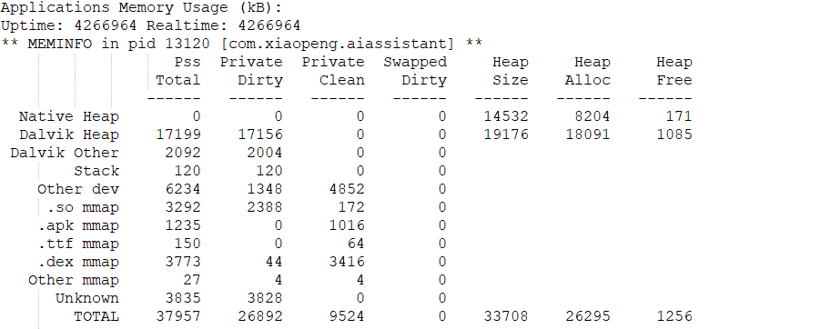

环境
- 系统版本
- V1.0.0.5
- MCU版本
- V4.4.2.8
- 固件版本
- 20181023214218.62
- 应用版本
- V1.1 20181106
- 时间
- 20181117
- 测试包见附件
内存占用 1.1 VS 1.0
状态： 初始态 (如右图)
内存: 37.0 mb (PSS)
版本: v1.0 (20181001)
初始态是指，kill 程序后，重新启动。

状态： 初始态 (如右图)
内存: 34.8 PSS
版本: 1.1 (20181106见附件)
下降： 5%

状态： 主页张开 (如右图)
内存: 74MB pss
版本: 1.0

状态： 主页张开 (如右图)
内存: 45.2MB pss
版本: 1.1
下降： 44%

状态： 收回 (从新回到主页)
内存: 62 MB （pss）
版本: 1.0

状态： 收回 如右图
内存占用: 40.3MB pss
版本: 1.1
下降: 36%


小结：
在初始状态，展开状态，回到主页状态下内存占用分别下降： 5% , 36% ,44%。
原因：
优化主要集中到Dalvik Heap区。
- 在1.0 有一张 1080*1920 的背景图 占用Dalvik区域8MB的内存，在1.1被换了方案，被去掉了。

其他建议：
Webp如果在效果不影响的前提下可以考虑使用 ARBG_4444来编码，这样可以节约 如果是 380*380的图 4~5 帧 可节约约 2MB/webAnimation。
CPU 占用
主线程：
eng.aiassistant com.xiaopeng.aiassistant
WebP线程：
FrameSequence d com.xiaopeng.aiassistant
WebP线程：
小图时候： 占用 2%上下。
大图的时候： 占用 5% 上下。
负责工作： 从Native区取出一帧数据，并没有做其他的工作，占用cpu比例少，目前找不到优化空间.

主线程
CPU占比： 4 ~15%

负责工作:
因为 webP 组件引起视图变化，主线程处理显示列表也是个正常要处理的流程，目前观察不到主线程有做其他的无用功。
小结
- CPU 占用方面目前没有发现可下手的地方。
详细记录见附件：